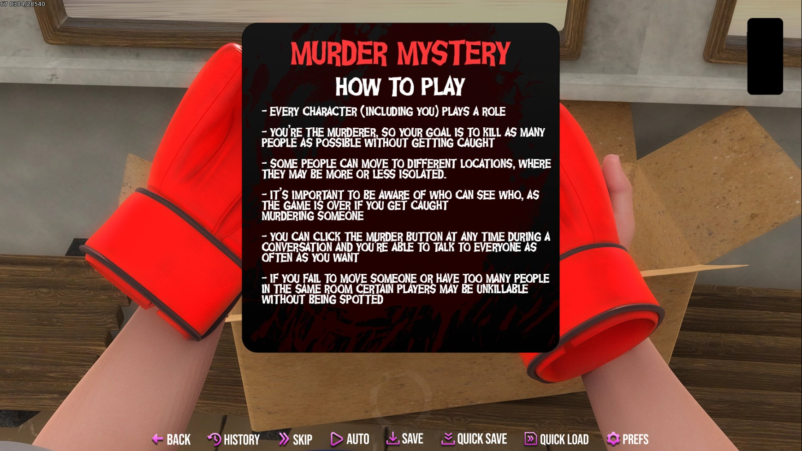
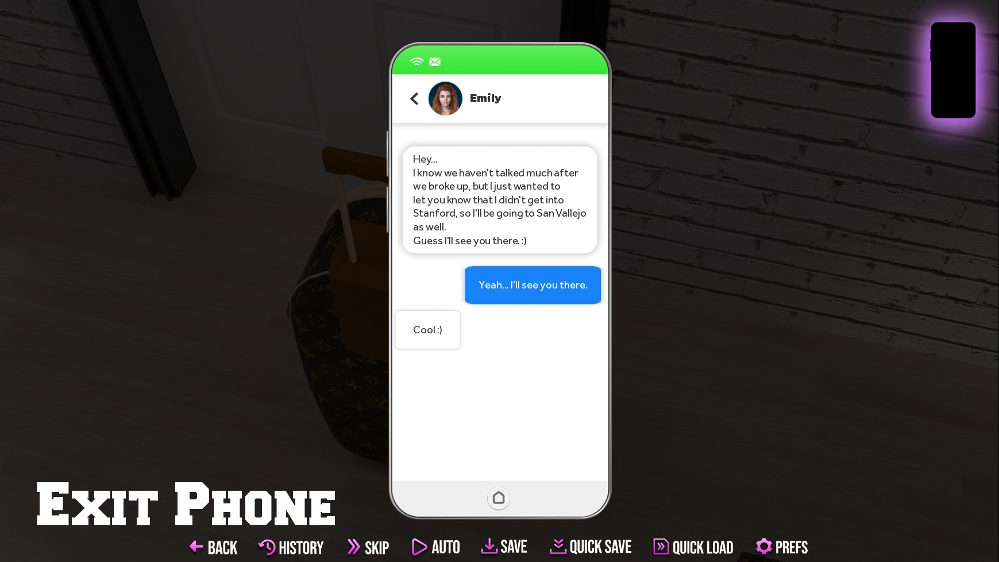
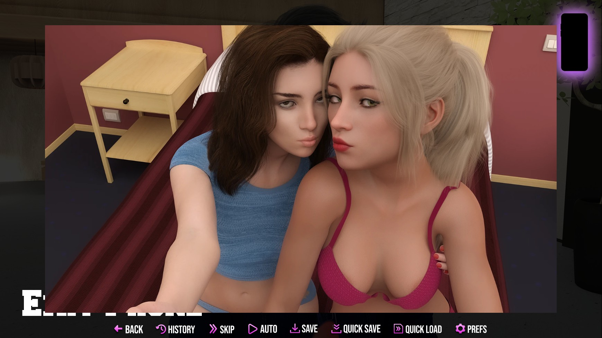
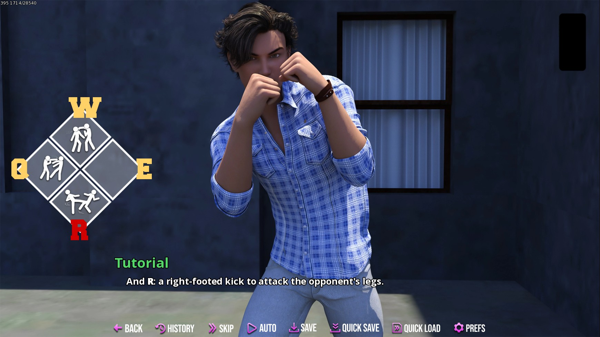
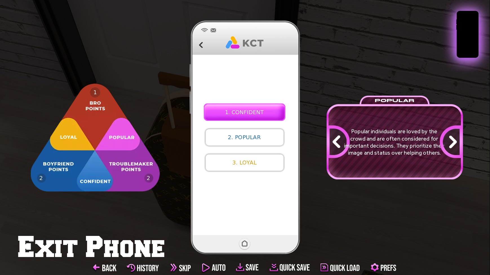
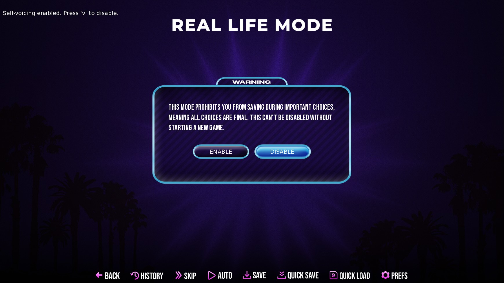
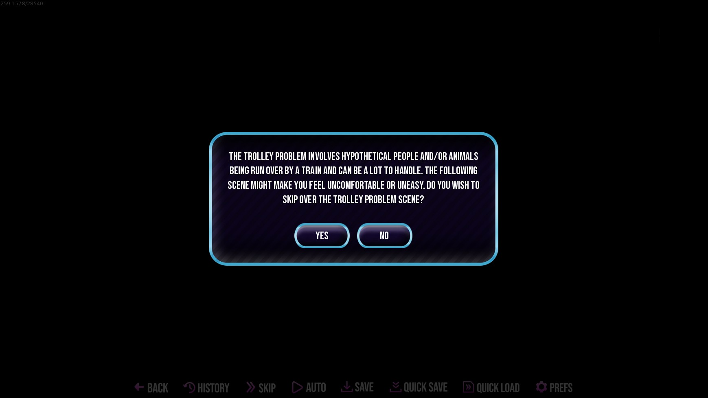
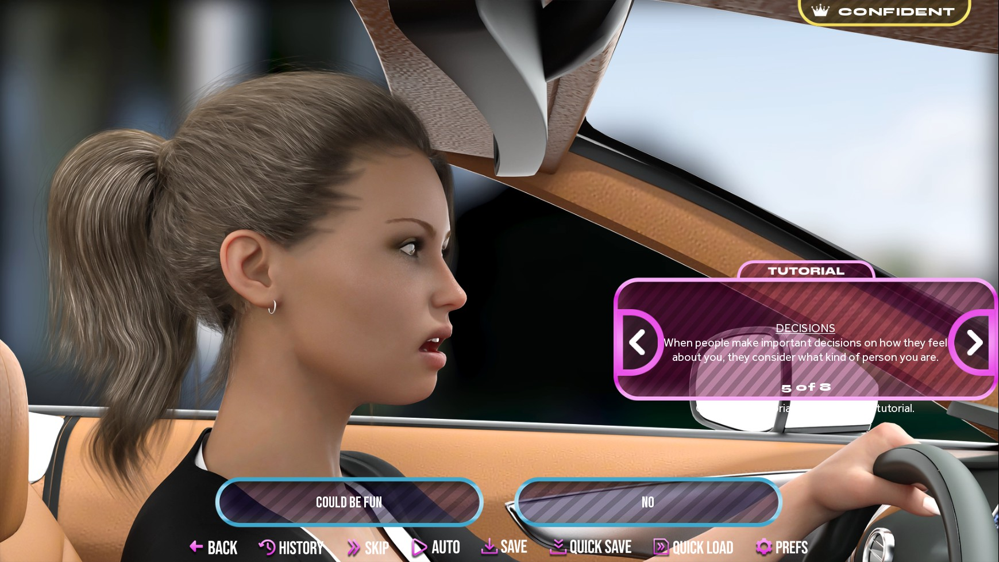
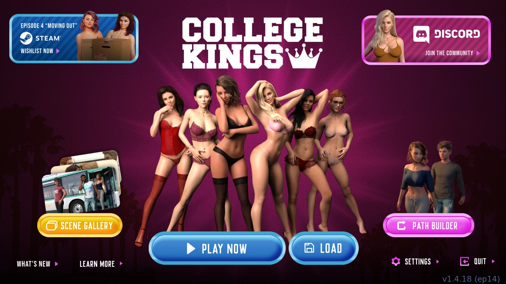

opowiadanie jest przyzwoite, acz szału nie robi; rzuca się w oczy iż próbuje być niczym „being a dik”; kłopot w tym, że nie prezentuje podobnego poziomu jakości, za to sporo niedoróbek; postać główna jest niedojrzała emocjonalnie (dialogi są nijakie), potrafi spać na łóżku w butach (skandal!), a do tego przez cały dzień jedynie wściubia nos w smartfon (degrengolada umysłowa); nie jest to aż tak angażujące jak mogłoby być, raczej dość miałkie; dodatkowo, nie bez znaczenia jest, że „college kings 2” jest rozdrobnione na dlc i ma problemy z jakością;
mamy do dyspozycji bezużytecznego smartfona i co jakiś czas swobodną eksplorację (free roam);
postaci zbyt szybko stają się przyjaciółmi; brakuje budowania relacji, emocjonalnego kontekstu dla zażyłości postaci;
co jakiś czas trzeba dokonać wyboru, przy czym wybory same w sobie nie są blokowane przez poprzednie; powoduje to iż można kłamać, stwierdzać rzeczy które nie miały miejsca; w związku z tym, gdy się wszystkim odmawia, to postaci potem wypowiadają kwestie sugerujące, że jednak było inaczej albo wręcz wspominają wydarzenia, które się nie wydarzyły;
można odnieść wrażenie iż co jakiś czas pojawia się monolog lekko moralizujący, który ma chyba w zamiarze wywołać kontemplację nad podjętymi wyborami;
w snach głównej postaci trzeba wybrać między dwoma postaciami, lecz na co to wpływa – nie wiadomo;
próbuje się wprowadzać elementy półopcjonalne jak poszukiwanie skarbu, jednak ostatecznie jest to dość płaskie;
# obcowanie z interfejsem i mechanikami
wyjaśnienie minigry z mordercą na pokładzie jest bardziej skomplikowane niż pokazanie o co chodzi; silenie się na tekstowe egzegezy zwiększa jedynie złożoność poznawczą, trud jaki trzeba włożyć w zrozumienie zagadnienia; to samo tyczy się wyjaśnień innych elementów, które winny być raczej tłumaczone przyrostowo, w miarę gdy się pojawiają; czyli lepiej by było wykonać to klasycznie, jak gamedev przykazał, a nie rzucać wszystko naraz; nawet jeżeli jest to wystarczająco proste, to nie wywołuje dobrych wrażeń;

jak zostać mordercą
aplikacje smartfona są bezużyteczne; simplr (aplikacja do randkowania) ma dwie ikony prowadzące do tego samego, a do tego nie działa to należycie: pojawia się informacja o tym że można prowadzić rozmowy tekstowe, tyle że nie można; ogółem używanie smartfona jest takie sobie, bo pokazując zdjęcie w przybliżeniu można przestać go używać w tle, zaś na pierwszym planie pozostanie pokazane zdjęcie; poza tym czcionka opisów aplikacji społecznościowej jest zbyt mała, by wygodnie się to czytało w porównaniu z wielkością czcionki całej reszty tekstu w grze;

sms-owanie

podgląd zdjęcia (można kliknąć na „exit phone”)
ogółem bijatyki są takie sobie; polega to na tym, że przeciwnik wyprowadza cios, który trzeba rozpoznać i na niego zareagować; w praktyce mamy tylko cztery typy ataków: z lewej strony, na wprost, z prawej strony, nogą; kontruje się to odpowiednio klawiszami q, w, e, r; gdy przeciwnik zakrywa twarz to atakowanie go na wprost spowoduje kontrę z jego strony itd.; dodatkowo można niby zdobywać nowe lepsze ruchy, lecz są takie tylko dwa; brzmi to jak dobry pomysł, jednakowoż ślamazarność tego rozwiązania i opieszałość w animacjach budzi raczej mierne wrażenia; renpy się po prostu do tego nie nadaje;

o, bogowie! walka!
interfejs jest dość estetyczny, choć brakuje mu czasem płynności w odpowiadaniu na interakcje, a jego elementy zachodzą czasem na tekst; w szczególności z biegiem czasu wyczuwalne jest opóźnienie w wybieraniu odpowiedzi w ramach sms-owania;

tendencje postaci
gra sili się na ochronę nas przed treściami zbereźnymi i tym podobnymi, co wg mnie jest zbyteczne;

tryb rzeczywisty

problem wagonika
podpowiedzi tutoriala trzeba chować za potwierdzeniem okna dialogowego; dotyczy to również przechodzenia do galerii scen, nawet jeśli wszystkie wpisy zostały już odblokowane;

okno tutoriala
gra oferuje budowniczego ścieżki (path builder), lecz nie ma to sensu skoro osiągnięć w tym trybie zdobyć nie można;

główna plansza gry
# wizualia
można dostrzeć iż braki w ludziach w tle próbuje się przykryć poprzez operowanie roślinnością;
postaci są realistycznie brzydkie; wygląd twarzy wydaje się być nieprzesadzony; to nie oznacza iż nie ma tu ładnie wyglądających postaci; po prostu, gdy wyglądają źle to jest w tym coś z odwzorowywania rzeczywistości;
zmieniające się tło podczas jazdy samochodem to dynamizm rzadko spotykany w powieściach wizualnych, jednak i tutaj nieużywany nigdzie indziej;
gra oferuje zwykle pokaz slajdów, ale zdarza się kilka iście filmowych animacji;
# spostrzeżenia ogólne
ilość nazwanych postaci jest spora; nadano imiona nawet postaciom epizodycznym;
niektóre z ponad 100 osiągnięć do zdobycia są nawet ciekawe; inaczej można by się nie dowiedzieć, że gra oferuje dodatkowe kwestie związane z podążaniem tylko za dwoma konkretnymi dziewczynami; albo że na wycieczce może być więcej osób niż domyślnie;
warunki obecności i nieobecności ambientu bywają tajemnicze; po wczytaniu sejwa muzyka domyślnie się nie włącza, trzeba poczekać na wyzwalacz w następnych scenach;
gra posiada swą własną stronę internetową itd.; niemniej, spoglądając na cykl wydawniczy, należy zauważyć że kolejne epizody wydawane są w złym stanie technicznym, co nie wróży dobrze na przyszłość;
w ustawieniach można odnaleźć informację o „marketing data collection”;
gra oferuje integrację z zabawką erotyczną lovense;
# kwestie techniczne
w przeszłości gra przechodziła przez etap błędu uruchomienia; po połączeniu osobnych aktów dlc w jeden sezon pojawiła się aktualizacja, która wyrzucała wyjątkiem związanym z nowym podejściem do obsługi osiągnięć; w praktyce gry nie dało się włączyć i trzeba było poczekać jakiś rok na rozwiązanie tej kwestii;
obecnie z kolei trawi ją kłopot z uprawnieniami typowy dla renpy'a, tj. wersja linux się nie uruchamia, chociaż wersja windows już tak;
❯ ./CollegeKings.sh./CollegeKings.sh: line 63: …/College Kings/lib/py3-linux-x86_64/CollegeKings: Permission denied./CollegeKings.sh: line 63: exec: …/College Kings/lib/py3-linux-x86_64/CollegeKings: cannot execute: Permission denied
❯ chmod u+x SteamLibrary/steamapps/common/College Kings/CollegeKings.sh❯ chmod u+x SteamLibrary/steamapps/common/College Kings/lib/py3-linux-x86_64/CollegeKings❯ ./CollegeKings.sh [S_API] SteamAPI_Init(): Loaded '/home/$USER/.local/share/Steam/linux64/steamclient.so' OK.[S_API FAIL] SteamAPI_Init() failed; no appID found.Either launch the game from Steam, or put the file steam_appid.txt containing the correct appID in your game folder.
# postaci
alex
główna postać
julia
macocha (stepmother)
ryan
kolega alexa, małpa (ape)
imre varga
kolega alexa, wilk (wolf), brat bence'a
josh
kolega alexa ze szkoły średniej, ma kłopoty finansowe
emily barnes
była dziewczyna, siostra hanny
ms. lorraine rose
macocha nory, wykładowczyni ekonomii
lucious rose
mąż lorraine, w separacji
mr. bruce lee
wykładowca historii
sarah haddock
lekarz w szpitalu san vallejo
lindsey
laska (chick), pracuje w „sports x”, zna się na pierwszej pomocy
amber
zadziorne dziewczę, zażywa narkotyki, pracuje w sklepie
mrs. harrison
dziekan uniwersytetu san vallejo
elijah
student, aspirujący do żab (frogs)
samantha
siostra camerona, uzależniona od narkotyków, nie znosi kontrolującego brata
autumn decker
przewodnicząca łań (deers), siostra lauren
lauren decker
siostra autumn, miłośniczka wypoczynku na świeżym powietrzu, wychowywana w religijnej rodzinie
aaron
wiceprzewodniczący wilków (wolves)
chris smith
przewodniczący wilków, chłopak nory
nora
laska (chick), dziewczyna chrisa, córka przyrodnia pani rose
aubrey
wiceprzewodnicząca lasek (chicks), siostra naomi
naomi
siostra aubrey, modelka
chloe moralez
przewodnicząca lasek (chicks)
grayson
przewodniczący małp (apes)
cameron
brat samanthy, wiceprzewodniczący małp (apes)
penelope cross
zhackowała rekrutację do san vallejo by pomóc jenny
trzeba się skupić na interakcjach z chloe, żeby się potem nie obraziła; nie można mieć relacji z lauren, bo ona będzie wymagała by to z nią udać się na potańcówę; podczas zakupów z macochą kup piłkę do siatkówki; preferowaną tendencją postaci jest pewny siebie (confident); nie bądź pijany podczas konfrontacji z chloe; zaproś ją na zjazd absolwentów (homecoming) i wraz z nią opuść tę wątpliwą imprezę;
w sklepie erotycznym zakup wszystko poza korkiem analnym (buttplug), którego i tak nie można użyć na chloe, a potem wybierz każdą opcję, gdy przyjdzie pora na bycie bardziej intymnym;
nie idź na randkę z lauren w akcie pierwszym; kup piłkę do siatkówki dla chloe; utrzymyj tendencję lojalny; zaproś chloe na zjazd absolwentów (homecoming), potem nawiąż relację z lauren; nie doprowadzaj do sceny seksu z aubrey w samolocie, bo wtedy lauren zerwie z alexem; podczas jazdy testowej w londynie zapytaj ją czy nie chciała by być twą dziewczyną;
ścieżka riley i lauren; nie randkuj z lauren w akcie pierwszym, zaproś riley na zjazd absolwentów (homecoming); następnie romansuj z lauren; wesprzyj lauren w jej decyzji co do wydarzenia charytatywnego łań (deers) i doprowadź do sceny bez stanika; wybierz zakwaterowanie z riley; powiedz lauren podczas wydarzenia harropotterowego, że ją kochasz; gdy lauren napisze ci, by przyjść na przytalanie, wybierz riley zamiast niej;
wymagana tendencja: popularny; pomóż joshowi ze sprzedażą narkotyków; amber przyjdzie i zaproponuje aktywność na osobności w środku nocy; w parku deskorolkowym połóż rękę na jej udzie, gdy riley odejdzie;
wybierz amber na zjazd absolwentów (homecoming); wymagana tendencja: popularny; gdy emily i amber napiszą obie sms-y w przypadku tej drugiej wybierz: “want to see what thinking about you has done to me?”;
trzeba zaangażować się romantycznie ze wszystkimi czterema, a potem opuścić bank w grupie pani rose; by nawiązać romans z panią rose trzeba być wilkiem (wolf) i wykorzystać możliwość, by ją pocałować; trzeba być zainteresowanym lindsey, by zostać jej chłopakiem, a także pocałować ją w escape room-ie; aby zjednać sobie norę należy zawsze wybierać jej stronę w konflikcie z chrisem i pocieszać ją; doprowadzi to do tego iż, po scenie z norą i lindsey w pokoju, gdy ta druga wyjdzie, będzie można pocałować tę pierwszą; lauren trzeba zaprosić na zjazd absolwentów (homecoming) i odmówić publicznego całowania, by reszta dziewcząt nie dostrzegła tej zażyłości;
use your interest in politics to get lindsey to run
podczas zwyczajowej rozmowy z autumn, która nie może być rozżalona na złe traktowanie lauren, wybierz: „yes of course, into politics”, a następnie „can i join?”; w dalszej kolejności wesprzyj lindsey w kandydowaniu na przewodniczącą: „support lindsey”;
wymagana tendencja: lojalny/popularny; w akcie pierwszym w kontakcie z emily wybierz: „it's ok, i'll see you there”; odrzuć rozmowę telefoniczną, gdy będzie dzwonić; zaproś emily na zjazd absolwentów (homecoming); to winno spowodować iż wymyśli ona udanie się z nią do salonu gier arkadowych; tak uczyń i wybierz tamże: „make it more interesting”, a następnie doprowadź do pokazania ci cycków;
trzeba być małpą (ape), albowiem tylko wtedy można zaprosić samanthę na wycieczkę zagraniczną; podczas oczekiwania na autobus z marihuaną wraz z amber, nie płać za nią biletu; to spowoduje, że cameron natknie się na nią rozzłoszczoną w szpitalu, do którego i tak się udamy po zasłabnięciu lauren przy kanale;
by doprowadzić do sceny seksu z norą należy wybierać zawsze jej stronę w konflikcie z chrisem i mówić jej to, co chce usłyszeć; w tym przypadku należy czynić dokładnie odwrotnie, a przy okazji zostać małpą (ape); bierz stronę chrisa za każdym razem; pozwól mu przytrzymać norę na promie; później, rozmawiając z norą, broń go; udaj się z nim do szpitala i życz mu dobrze podczas przejażdżki samochodowej;
by mieć możliwość dorwać wszystkich, trzeba zaprosić trzy dodatkowe osoby, które mogą się nie pojawić: josha, samanthę i emily; pomóż norze z szerzeniem wici, by uzyskać możliwość bezpośredniego zaproszenia; zaproś emily przed bitwą w błocie podczas wydarzenia charytatywnego; porozmawiaj z joshem, gdy zobaczysz go w bocznej alejce i zachęć go do wyjazdu dziewczętami; zaproszenie samanthy wymaga ścieżki małpy (ape);
keen eye
pick the muffin
podczas zakupów strojów na wykład z historii wraz z penelope podglądaj ją, dopóki ona cię nie odkryje; przeproś ją za to; natykając się na nią ponownie w kawiarni, kup jej muffinkę w ramach zadośćuczynienia;